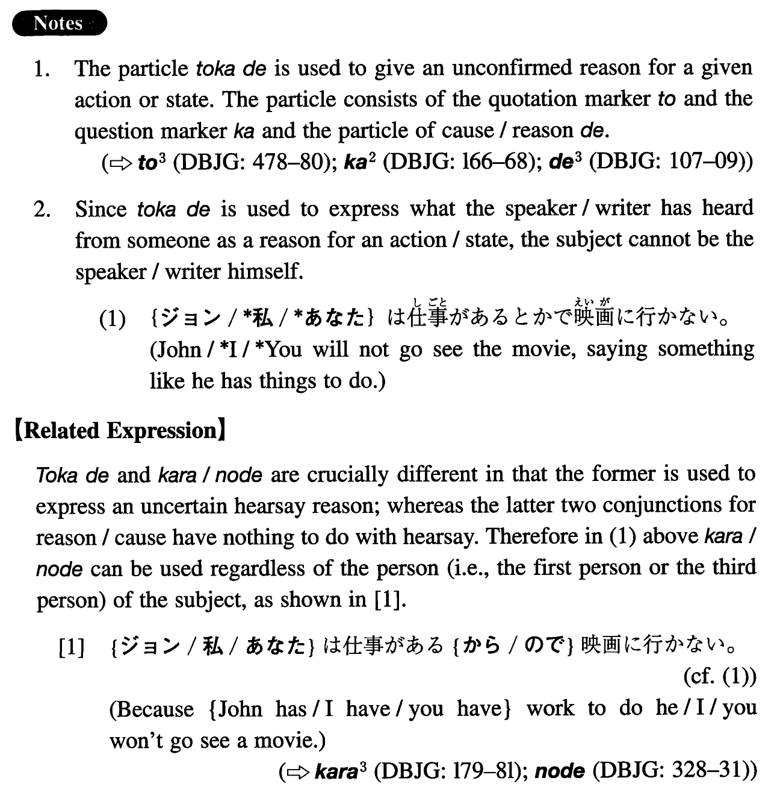

←
DoJG
→
とかで
(I. 498)
Example sentences
(ks).
高木さんは大阪に出張する
とかで
パーティーに来なかった。
Mr. Takagi didn't show up at the party, saying something like he was going to make a business trip to Osaka.
(a).
友人の竹田は大学の授業が面白くない
とかで
大学を辞めてしまった。
My friend Takeda quit college, saying something like the college classes weren't interesting.
(b).
ミリアムは日米関係に興味がある
とかで
、大学で国際関係論を専攻した。
Miriam majored in international relations saying something like she was interested in Japan-US relations.
(c).
エンジンに故障があった
とかで
、飛行機の出発が五時間も遅れた。
The flight departure was five hours late for some reason like there was engine trouble.
(d).
受講生が少なかった
とかで
、四年生の日本語のクラスは取りやめになった。
The 4th-year Japanese class has been cancelled for some reason like the enrolment was low.
(e).
田村は殺人現場に居合わせた
とかで
、警察に逮捕された。
Tamura was arrested by the police allegedly because he happened to be at the scene of the murder or something like that.
Formation
Sinformal
とかで
日本へ行く
とかで
Saying something like someone is going to Japan
学校がつまらない
とかで
Saying something like the school is boring
